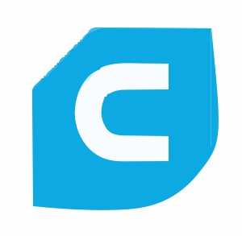

Savoir-faire
Atelier de prototypage et rétrofit à taille humaine
Nous travaillons avec une Creality Ender 3 fiabilisée, un poste d’ajustage manuel et quatre stations CAO pour concevoir, réparer et documenter vos pièces unitaires avec des outils 100 % libres.
Une organisation agile pour vos urgences techniques
Chaque mission combine modélisation open source, fabrication additive et finitions manuelles afin de livrer rapidement des pièces prêtes à monter.
- Documentation versionnée (plans, notices, photos) partagée sur demande.
- Échanges fluides par e-mail, téléphone ou Mattermost selon votre préférence.
- Archivage des fichiers FreeCAD, LibreCAD et profils Cura / PrusaSlicer pour faciliter les itérations.
Structure de l’atelier
- Creality Ender 3 entretenue (buses 0,4 / 0,6 mm, plateau PEI magnétique).
- Poste de montage pour petits systèmes de précision et essais fonctionnels.
- Espace photo dédié pour documenter chaque envoi.
Informatique & logiciels
- 4 ordinateurs Linux équipés de FreeCAD, LibreCAD, KiCad et OnlyOffice.
- Préparation impression sous Cura et PrusaSlicer avec profils maison.
- Stockage et partage via Nextcloud auto-hébergé en France.
Contrôle & expédition
- Contrôle visuel et mesure au pied à coulisse digital (0,01 mm).
- Ébavurage, perçage de précision, Dremel, touret et limes pour les finitions.
- Conditionnement soigné, impression ticket de reçu et suivi colis.
Matériel de production
- Creality Ender 3 (PLA, PLA+, PETG, TPU 95A).
- Plateau PEI flexible, détection filament et enceinte souple.
- Préparation des inserts filetés et aimants néodyme à venir.
Outillage manuel
- Perceuse colonne de précision, touret, Dremel et mini-outils.
- Jeux de clés, tournevis, pinces, serre-joints et étau.
- Limes, abrasifs, colles techniques, visserie inox et gaines thermo.
Postes informatiques
- Quatre postes (fixes & portables) dédiés à la CAO/DAO et bureautique.
- Automatisation des exports STEP, STL, DXF et PDF.
- Sauvegardes chiffrées et synchronisation quotidienne.
Process en quatre étapes
- Diagnostic. Collecte des mesures, photos et contraintes d’usage.
- Modélisation libre. Conception ou rétrofit sous FreeCAD / LibreCAD avec validation visuelle.
- Fabrication Ender 3. Impression, ajustage manuel et préparation d’assemblage.
- Contrôle & livraison. Vérification visuelle, pied à coulisse, reportage photo, emballage et expédition.
Suite logicielle open source
Nous nous appuyons uniquement sur des outils libres pour garantir la traçabilité de vos fichiers et leur réutilisation. Consulter la fiche détaillée des logiciels.
| Logo | Logiciel | Usage principal | Licence |
|---|---|---|---|
 |
FreeCAD | Modélisation paramétrique, assemblages et plans. | LGPL 2.1 |
| LibreCAD | Plans 2D normés, gabarits de découpe. | GPL v2 | |
 |
KiCad | Schémas et circuits imprimés. | GPL v3 |
|  | Cura | Préparation impression FDM sur Ender 3. | LGPL v3 |
| PrusaSlicer | Profils alternatifs et ajustement des supports. | AGPL v3 |
L’atelier en images

Crédit image : 3DPANNE

Crédit image : 3DPANNE

Crédit image : 3DPANNE
Planifier une intervention
Partagez votre besoin : nous répondons sous 48 h avec un diagnostic, un devis et un planning réaliste.
Contacter l’atelierCrédit image : 3DPANNE